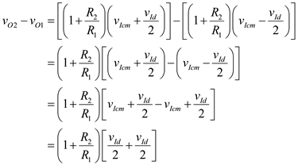
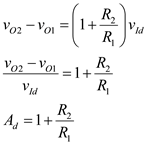
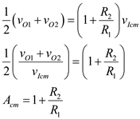
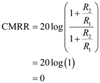
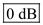
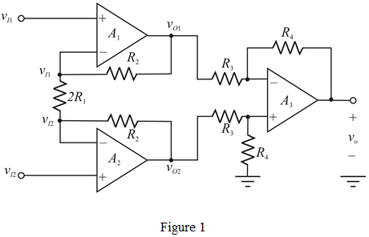
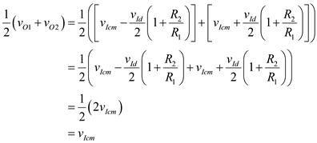
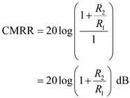

Step 1:
(a)
Refer to instrumentation amplifier in Figure 2.20 (a) in the textbook.
Write the expression for the input signals,  and
and  in terms of differential and common-mode components.
in terms of differential and common-mode components.
And,
Write the expression for the output voltage of first op-amp.
Substitute for  in the equation.
in the equation.
Therefore, the output voltage, is .
Step 2:
Write the expression for the output voltage of second op-amp.

Substitute for  in the equation.
in the equation.
Therefore, the output voltage, is .
Step 3:
Calculate the differential component .

Therefore, the differential component, is .
Step 4:
Calculate the common-mode component.
Therefore, the common-mode component, is .
Step 5:
Calculate the differential gain.
Recall differential component expression.

Therefore, the differential gain,  is .
is .
Calculate the common mode gain.
Recall the common-mode component expression.

Therefore, the common-mode gain,  is
is  .
.
Step 6:
Calculate the common-mode rejection ratio.

Substitute  for
for  , and for
, and for  in the equation.
in the equation.

Therefore, the common-mode rejection ration is .
Step 7:
(b)
Refer to instrumentation amplifier in Figure 2.20 (b) in the textbook.
In an ideal op-amp, the inverting and non-inverting terminal currents are zero and the inverting and non-inverting node voltages are equal. The modified circuit is shown in Figure 1.

Write the expression for the input signals,  and in terms of differential and common-mode components.
and in terms of differential and common-mode components.
And,
Step 8:
Apply Kirchhoff’s current law at inverting terminal of first op-amp.
Substitute  for
for  , and for
, and for  in the equation.
in the equation.
Therefore, the output voltage of first op-amp,  is .
is .
Step 9:
Apply Kirchhoff’s current law at inverting terminal of first op-amp.
Substitute for  , and
, and  for
for  in the equation.
in the equation.
Therefore, the output voltage of second op-amp, is .
Step 10:
Calculate the differential component output voltage .

Therefore, the differential component output voltage, is .
Step 11:
Calculate the common-mode component .

Therefore, the common-mode component, is .
Step 12:
Calculate the differential gain.
Recall differential component expression.
Therefore, the differential gain,  is .
is .
Calculate the common mode gain.
Recall the common-mode component expression.
Therefore, the common-mode gain, is  .
.
Step 13:
Calculate the common-mode rejection ratio.

Substitute for  , and
, and  for in the equation.
for in the equation.

Therefore, the common-mode rejection ration is .
Therefore, the common mode voltage is not amplified only it is propagated to the outputs of the first stage.